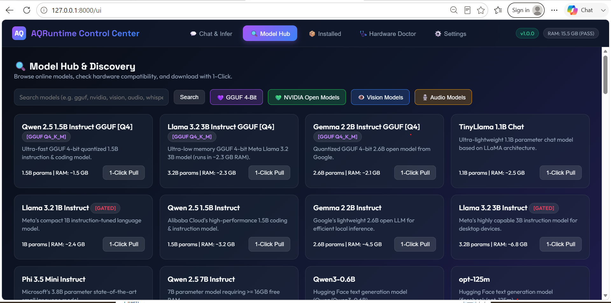
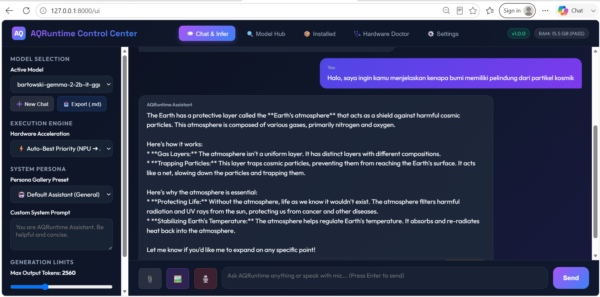

The lightweight, high-performance local AI runtime for Language (LLMs), Multimodal Vision, and Voice Audio Engines. Optimized for Intel NPU, Intel Arc iGPU, DirectML, CUDA & CPU.

Discover the capabilities that make AQRuntime a next-generation local AI engine.
Automated Priority Fallback Chain: Intel NPU ➔ Intel Arc iGPU (OpenVINO) ➔ DirectML (DirectX 12) ➔ CUDA GPU ➔ CPU. Maximizes hardware throughput on any PC setup.
Speak to your AI via live microphone voice recording (Speech-to-Text) and listen to responses spoken aloud in natural human voice with zero-latency HTML5 Speech Synthesis (Text-to-Speech).
Attach images (`.png`, `.jpg`, `.webp`) with a live thumbnail preview canvas. Compatible with OpenAI Base64 Multimodal API payload format and local vision models (PaliGemma, Moondream2).
Live generation metrics under assistant bubbles displaying exact tokens per second (`tok/s`), response latency, and RAM memory estimation badges.
Attach code or text files (`.py`, `.txt`, `.json`, `.md`, `.csv`). Built-in binary protection prevents Word/Zip context window crashes with safe 4,500 character truncation limits.
Generate short answers or full multi-page manuscripts with a dynamic output tokens limit slider (configurable from 64 up to 8,192 tokens) via Web GUI or CLI `--max-tokens`.
See why developers and power users choose AQRuntime for local AI workloads.
| Feature / Capability | ⚡ AQRuntime | 🦙 Ollama | 🖥️ LM Studio |
|---|---|---|---|
| Intel NPU & Intel Arc Acceleration | ✅ Full Native (OpenVINO) | ❌ Limited / Experimental | ❌ Limited |
| Hardware Priority Fallback Chain | ✅ Auto (NPU➔Arc➔CUDA➔CPU) | ⚠️ Fixed GPU/CPU | ⚠️ Fixed GPU/CPU slider |
| Voice STT & Speech Synthesis TTS | ✅ Native Mic STT + Read Aloud | ❌ Not available | ❌ Not available |
| Multimodal Vision Canvas (`🖼️`) | ✅ Live Thumbnail & Base64 API | ⚠️ CLI / Basic API | ✅ GUI Preview |
| Speed & Performance Telemetry | ✅ Live tok/s, latency & RAM | ⚠️ Terminal summary | ⚠️ Minimal header stats |
| Document Attachment & Safety Guard | ✅ Auto-Reader + Binary Guard | ❌ Manual copy-paste | ⚠️ File drop |
| Dynamic Max Tokens Slider | ✅ Configurable (64-8192) | ⚠️ CLI flag parameter | ✅ Settings sidebar |
| OpenAI API Standard Endpoint | ✅ Native /v1/chat/completions | ✅ Native API | ✅ Local Server API |
| Open Source License | ✅ 100% MIT Open Source | ✅ MIT Open Source | ❌ Proprietary Closed Source |
Real screenshots of AQRuntime running on Windows 11 with Intel NPU hardware detection.

Manage models and execution runtimes directly from your command line.
# Display full CLI manual & command guide aq help # Launch interactive Web Control Center UI (Tab 1-5) aq ui # Perform system hardware diagnostic & NPU capability audit aq doctor # Discover online speech audio models aq discover audio # Download local model weights aq pull bartowski/gemma-2-2b-it-GGUF # Run interactive CLI session with 2048 max output tokens aq run bartowski/gemma-2-2b-it-GGUF --max-tokens 2048
Follow these 3 simple steps to publish this promotional landing page live on GitHub Pages:
Push the contents of `d:\site-aqruntime` into your repository's `gh-pages` branch or a `/docs` directory inside `Almudaya-AQRuntime` repository.
Open GitHub repository https://github.com/elangbijak4/Almudaya-AQRuntime ➔ Click Settings ➔ Select Pages ➔ Under Source, choose "Deploy from a branch" and select `gh-pages` (or `main` / `/docs`).
Your website will automatically go live within 1 minute at:
https://elangbijak4.github.io/Almudaya-AQRuntime/